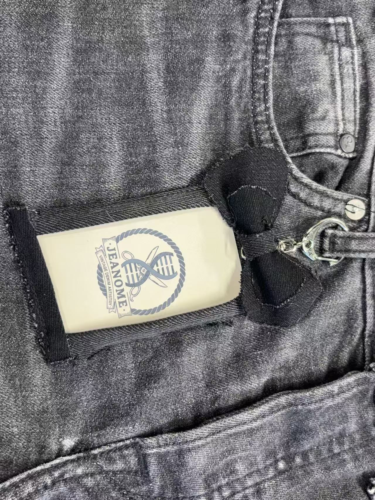
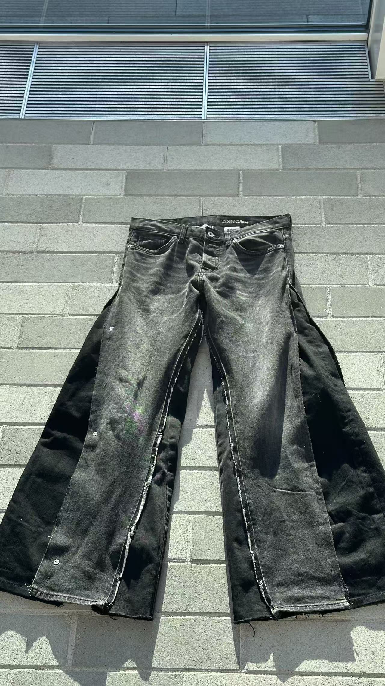
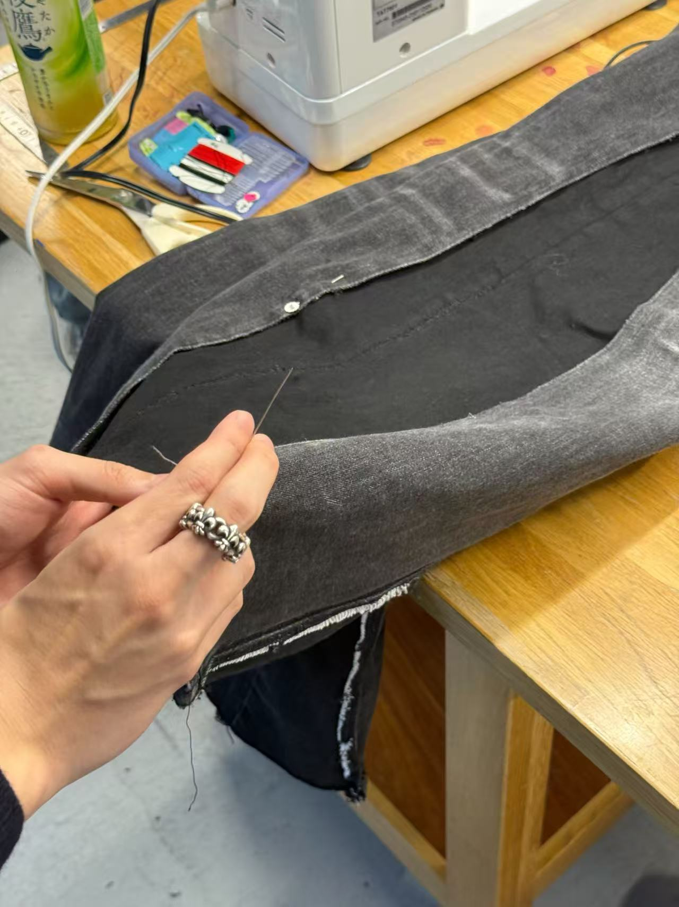

プロジェクト概要
JEANOME（ジーノーム）は、不要になった衣服に新しい命を吹き込むことを目指す学生プロジェクトです。 捨てられるところだった古着を素材に、デザインを工夫して縫い直すことで、別の魅力ある一着へと生まれ変わらせることに挑戦しています。
プロジェクト名の「JEANOME」は「jeans」と「genome」を組み合わせて生まれた造語で、 古着に新しいDNAを与えるという発想を表しています。 また、本プロジェクトは持続可能なファッションやサーキュラーエコノミー（循環型経済）への関心から生まれた企画でもあります。 私は特に、地域で衣服を循環させ、新たな価値を生み出す「Community Loops（コミュニティ・ループス）」の理念に強く共感しており、 その考え方をこのプロジェクトにも取り入れました。
ギャラリー
ここに、再構築した服（成品）と制作プロセスの写真を掲載します。
※ 現在は枠のみ配置しています。あとで画像パスを差し替えてください。

成品（完成した服）

成品（ディテール）

制作プロセス（裁断・縫製）
NFC Scan Website
完成した衣服に付与されたNFCタグをスマートフォンで読み取ると、専用Webサイト（JEANOME）へ遷移します。
衣服の来歴や構成情報（Genealogy）を確認できます。
▼ ページをこのまま埋め込み表示（環境によっては表示できない場合があります。その場合は上のボタンから開いてください）
感想
このプロジェクトを通して、廃棄されるはずだった衣服にもまだ多くの可能性があることに気付きました。 デザインを考え直し、一から縫い直す作業は決して簡単ではありませんでしたが、 だからこそ一着の服に込められた価値を改めて実感しています。
プロジェクトを終えたいま、普段何気なく新しい服を手に取っていた自分の消費行動について考え方が少し変わりました。 一つひとつの衣服をより大切に扱い、長く活かす方法をこれからも意識していきたいと思います。
Contact
ご連絡は jmy20020429@gmail.com まで。